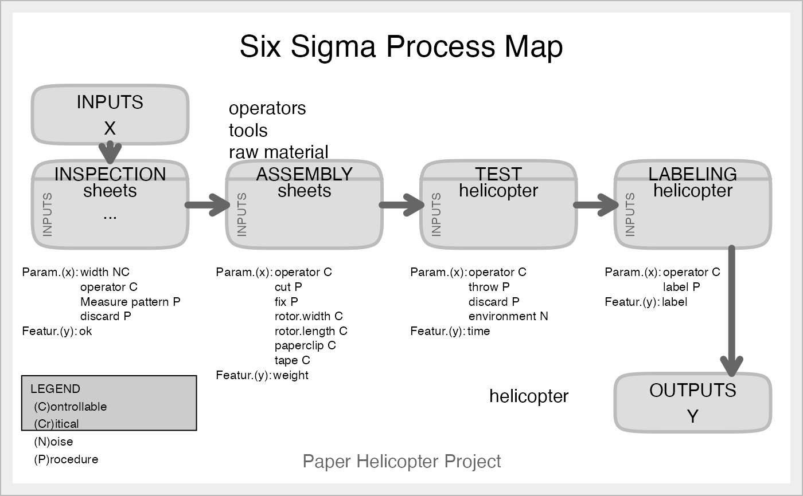

This function takes information about the process we want to represent and draw the Process Map, with its X's, x's, Y's and y's in each step of the process
ss.pMap(
steps,
inputs.overall,
outputs.overall,
input.output,
x.parameters,
y.features,
main = "Six Sigma Process Map",
sub,
ss.col = c("#666666", "#BBBBBB", "#CCCCCC", "#DDDDDD", "#EEEEEE")
)A vector of characters with the name of the 'n' steps
A vector of characters with the name of the overall inputs
A vector of characters with the name of the overall outputs
A vector of lists with the names of the inputs of the \(i-{th}\) step, that will be the outputs of the \((i-1)-{th}\) step
A vector of lists with a list of the x parameters of the process. The parameter is a vector with two values: the name and the type (view details)
A vector of lists with a list of the y features of the step. The feature is a vector with two values: the name and the type (view details)
The main title for the Process Map
Subtitle for the diagram (recommended the Six Sigma project name)
A vector of colours for a custom drawing. At least five colours, sorted by descendant intensity (see details)
A graphic representation of the Map Process.
The type of the x parameters and y features can be: C(controllable), N(noise), Cr(Critical), P(Procedure). The default value for ss.col is c("#666666", "#BBBBBB", "#CCCCCC", "#DDDDDD", "#EEEEEE"), a grayscale style. You can pass any accepted color string.
The process map is the starting point for a Six Sigma Project, and it is very important to find out who the x's and y'x are.
https://en.wikipedia.org/wiki/Business_Process_Mapping
Cano, Emilio L., Moguerza, Javier M. and Redchuk, Andres. 2012.
Six Sigma with R. Statistical Engineering for Process
Improvement, Use R!, vol. 36. Springer, New York.
https://www.springer.com/gp/book/9781461436515.
inputs.overall<-c("operators", "tools", "raw material", "facilities")
outputs.overall<-c("helicopter")
steps<-c("INSPECTION", "ASSEMBLY", "TEST", "LABELING")
#Inputs of process "i" are inputs of process "i+1"
input.output<-vector(mode="list",length=length(steps))
input.output[1]<-list(c("sheets", "..."))
input.output[2]<-list(c("sheets"))
input.output[3]<-list(c("helicopter"))
input.output[4]<-list(c("helicopter"))
#Parameters of each process
x.parameters<-vector(mode="list",length=length(steps))
x.parameters[1]<-list(c(list(c("width", "NC")),list(c("operator", "C")),
list(c("Measure pattern", "P")), list(c("discard", "P"))))
x.parameters[2]<-list(c(list(c("operator", "C")),list(c("cut", "P")),
list(c("fix", "P")), list(c("rotor.width", "C")),list(c("rotor.length",
"C")), list(c("paperclip", "C")), list(c("tape", "C"))))
x.parameters[3]<-list(c(list(c("operator", "C")),list(c("throw", "P")),
list(c("discard", "P")), list(c("environment", "N"))))
x.parameters[4]<-list(c(list(c("operator", "C")),list(c("label", "P"))))
x.parameters
#> [[1]]
#> [[1]][[1]]
#> [1] "width" "NC"
#>
#> [[1]][[2]]
#> [1] "operator" "C"
#>
#> [[1]][[3]]
#> [1] "Measure pattern" "P"
#>
#> [[1]][[4]]
#> [1] "discard" "P"
#>
#>
#> [[2]]
#> [[2]][[1]]
#> [1] "operator" "C"
#>
#> [[2]][[2]]
#> [1] "cut" "P"
#>
#> [[2]][[3]]
#> [1] "fix" "P"
#>
#> [[2]][[4]]
#> [1] "rotor.width" "C"
#>
#> [[2]][[5]]
#> [1] "rotor.length" "C"
#>
#> [[2]][[6]]
#> [1] "paperclip" "C"
#>
#> [[2]][[7]]
#> [1] "tape" "C"
#>
#>
#> [[3]]
#> [[3]][[1]]
#> [1] "operator" "C"
#>
#> [[3]][[2]]
#> [1] "throw" "P"
#>
#> [[3]][[3]]
#> [1] "discard" "P"
#>
#> [[3]][[4]]
#> [1] "environment" "N"
#>
#>
#> [[4]]
#> [[4]][[1]]
#> [1] "operator" "C"
#>
#> [[4]][[2]]
#> [1] "label" "P"
#>
#>
#Features of each process
y.features<-vector(mode="list",length=length(steps))
y.features[1]<-list(c(list(c("ok", "Cr"))))
y.features[2]<-list(c(list(c("weight", "Cr"))))
y.features[3]<-list(c(list(c("time", "Cr"))))
y.features[4]<-list(c(list(c("label", "Cr"))))
y.features
#> [[1]]
#> [[1]][[1]]
#> [1] "ok" "Cr"
#>
#>
#> [[2]]
#> [[2]][[1]]
#> [1] "weight" "Cr"
#>
#>
#> [[3]]
#> [[3]][[1]]
#> [1] "time" "Cr"
#>
#>
#> [[4]]
#> [[4]][[1]]
#> [1] "label" "Cr"
#>
#>
ss.pMap(steps, inputs.overall, outputs.overall,
input.output, x.parameters, y.features,
sub="Paper Helicopter Project")
